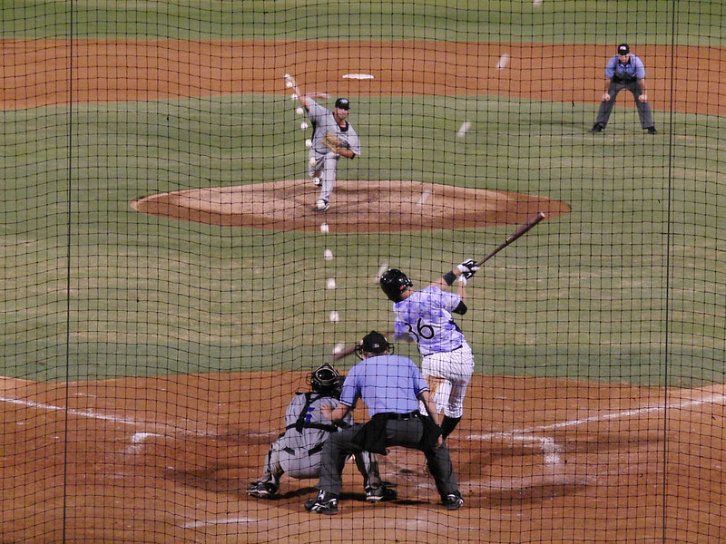
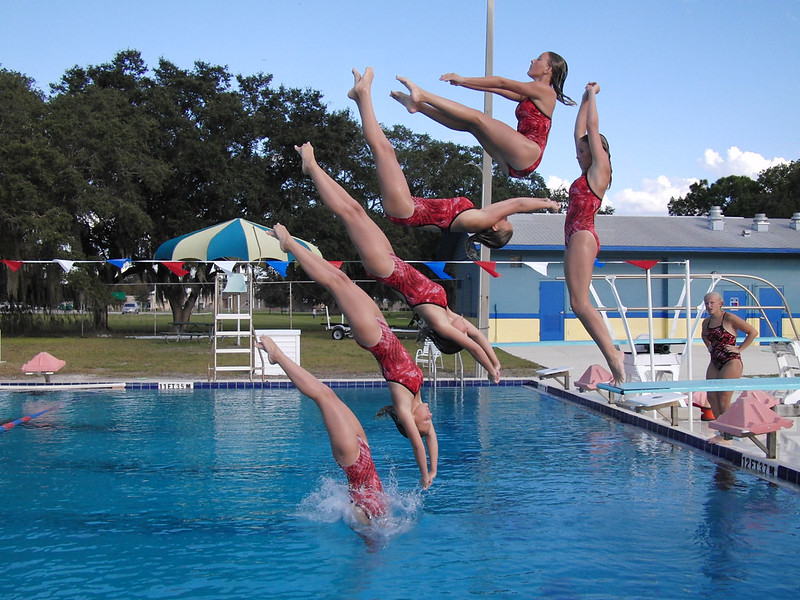

Multiplicity Photography puts multiple images of a (typically) moving object into the same photo. This is achieved by taking multiple photos of the same object (in motion) and merging these photos into a single photo with a photo editor.
Depending on the speed of the moving object a camera is required that is able to take photos at a fast enough frame rate. The above sequence of the Moto Cross rider was taken at 60 fps, though adjacent images in the final photo are more than 1/60s apart.
The photos should be taken with a tripod to make it easier when merging the indivual shots in post production.
